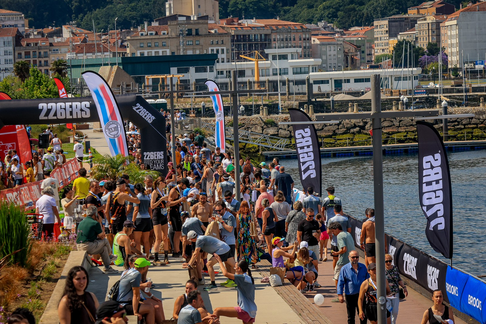
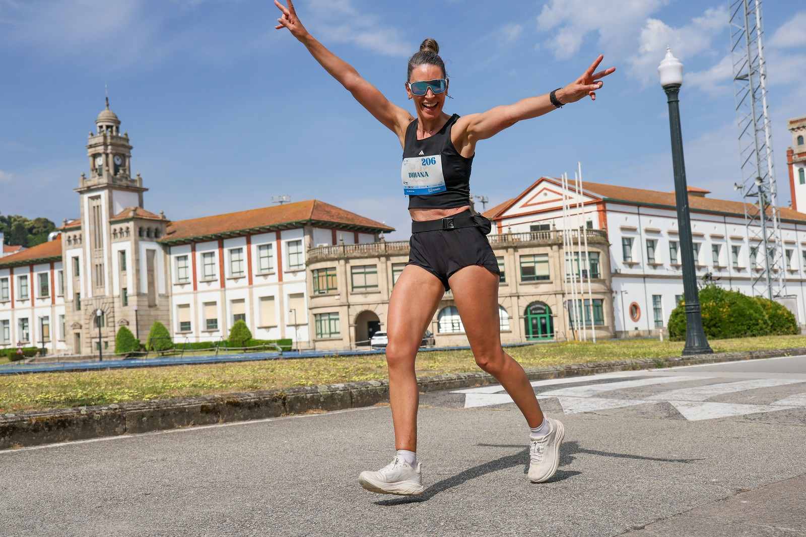

Marín Carreiras staged the fifth edition of the V Carmiña Carreira in Marín, Pontevedra, on Sunday 14 June 2026, with event coverage by the Image Media team. The main race started from Praia de Lapamán at 10:00h and finished on the Paseo Alcalde Antonio Blanco, covering a route of just over 10 kilometres along the town's coastline. A shorter Mini Carmiña race of 5.4km started separately at 10:30 from the Náutico de Aguete. More than 900 people took part across both races, with 354 runners finishing the main Carmiña Carreira distance.

Yago González (Miler Running Club) won the men's race in 40:27, ahead of Jorge Puig (CD Pinarium) in 43:49 and Francisco López (La Cerezal Team) in 43:50. Beatriz Fernández (CD Pinarium) won the women's race in 49:43, ahead of Merchi Paz (Ponte a Correr) in 55:18 and Susanne Ewering in 55:44. In the separate Mini Carmiña race, Bedilu Mendoza won the men's category in 18:31 and Lara Santaclara won the women's category in 24:07.

The Carmiña Carreira is organised by Marín Carreiras, which also stages the separate +10K Marín Manuel Rosales, a night race set for its thirteenth edition on 25 July 2026 at a different date and starting point in the town. Both events are run independently of one another under the same organiser.
The Image Media coverage team at V Carmiña Carreira comprised Michael Rosa, Paulo Nomade, Luan Rodrigo and Luis Moreira.